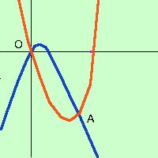

|
Trovare l'intersezione fra le due parabole y = x2 - 6x y = -x2 + 2x Possiamo subito osservare che siccome manca il termine noto uno dei due punti comuni deve essere l'origine delgli assi O=(0,0) Facciamo il sistema y = -x2 + 2x Sostituisco il valore di y della prima nella seconda equazione Se sostituisci in modo che prima dell'uguale x2 sia positiva ti risparmi un passaggio x2 - 6x = -x2 + 2x x2 +x2 -2x - 6x = 0 2x2 -8x = 0 semplifico per 2 x2 -4x = 0 E' un'equazione spuria x(x-4)=0 che ammette le soluzioni x = 0 x=4 sostituisco il valore 0 in una delle due equazioni del sistema (conviene prendere la piu' semplice) x = 0 Primo punto O=(0, 0)  sostituisco il valore 4 in una delle due equazioni del sistema x = 4 Secondo punto A=(4, -8) A destra la rappresentazione grafica |